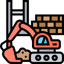
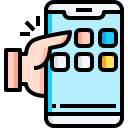

What's happening
Captivating Srolling
Parallax scrolling which is a web effect that adds dynamism to specific sections of a webpage. Engages content and feels like a real life navigation effect.
Dynamic Cursors
Moving the cursor around, scrolling or clicking has a nice touch of finger tips. Action triggered elements and seeing the movements has proved its charm for users.
Micro Interactions
Small animations that either change colours or react when user mouse moves over it. Attention to stand out and identify
Mini-sites of delight
Creating websites that provokes a laugh and are fun to use. A playful UX design with opportunity to go above the norm and turn a website to a fun gaming space
One page websites
As our attention span these days. Everything in one seems to be the go-to and how cool would it be to have one website that portrays its message effectively and well
Sites with a strong sense of place
A website where you have a feeling and connection by bringing the visitor to your site.
App-like experiences
Smaller experienced focused sites are the future of web design. Interaction, animation and dynamic feel similar to our favourite app do gain attraction and attention.